About Me
I am a machine learning researcher and engineer working at the intersection of mathematical optimization, scalable learning systems, and neural architecture design.
My primary interests include distributed and federated learning, communication-efficient optimization, efficient LLM training, and Mixture-of-Experts architectures. I am particularly interested in how learning algorithms can adapt to limited compute, heterogeneous infrastructure, and complex interactions between models or experts.
My background in mathematics, physics, and computer science shapes the way I approach machine learning research. I aim to understand not only whether a method works, but why it works, how it behaves under different constraints, and how its theoretical properties translate into real training systems.
I enjoy working across the full research cycle, from studying mathematical foundations and formulating hypotheses to implementing algorithms in PyTorch, building distributed experimentation pipelines, running ablation studies, and analyzing convergence, efficiency, and model quality. I am most motivated by projects that connect principled ideas with rigorous experiments and reproducible engineering.
More broadly, I am interested in autonomous research agents, AutoML, retrieval-augmented systems, representation learning, and new approaches to organizing computation inside neural networks.
I am open to research collaborations, internships, and ambitious projects in optimization, distributed machine learning, and large-scale AI systems.
Experience
AI Researcher
Machine Learning Research Intern
Core researcher and developer in a joint MIPT research group studying communication-efficient distributed training of large language models.
Machine Learning Research Intern
Selected for the competitive Sirius "Big Challenges" research program in Big Data, AI, Financial Technologies, and Machine Learning.
Machine Learning Engineer
Our team developed "Virtual Therapist" in collaboration with MEDSI — an AI-powered patient-routing service designed to analyze patient-reported symptoms and medical history and recommend the most suitable specialist.
Education
Sirius University of Science and Technology
Activities and societies: Active participant in university-organized hackathons, including the Young Scientists Hackathon 2025; team-based software development, rapid prototyping, and applied problem-solving.
Kapitsa Phystech-Lyceum
Activities and societies: Member of advanced Olympiad preparation groups in Mathematics, Physics and Computer Science; participant in intensive training camps; member of a Young Physicists' Tournament team.
Russia's No. 1 school for graduate competitiveness and for technical, natural sciences, and exact sciences according to the 2024 RAEX rankings.
Publications
SDG-MoE: Signed Debate Graph Mixture-of-Experts
SDG-MoE explores a new direction for Mixture-of-Experts architectures inspired by social deliberation. Instead of processing routed tokens independently, active experts form a learned signed interaction graph through which they exchange representations before producing output.
Show Publication ↗KompeteAI: Accelerated Autonomous Multi-Agent System for End-to-End Pipeline Generation
An accelerated autonomous multi-agent system for end-to-end pipeline generation for machine learning problems.
AdLoCo: Adaptive batching significantly improves communications efficiency
Efficient distributed training of large language models is often limited not by computation itself, but by the cost of communication and synchronization between workers. AdLoCo addresses this challenge through an adaptive batching mechanism.
Show Publication ↗Exploring Applications of State Space Models in Sequential Recommendations
Exploring applications of State Space Models and Advanced Training Techniques in Sequential Recommendations.
Show Publication ↗Honors & Awards
Artificial Intelligence & Project Competitions
Grand Prize Winner & People's Choice Award, International Big Challenges 2026
Named Grand Prize Winner and received the People's Choice Award at the 2026 International Big Challenges Competition, a selective science and technology contest where young researchers present complete author-led projects before academic and industry experts.
The project proposed SDG-MoE, a new Mixture-of-Experts architecture inspired by social deliberation. Active experts interacted through learned support and critique graphs, allowing them to exchange information and refine their representations before producing a collective output.
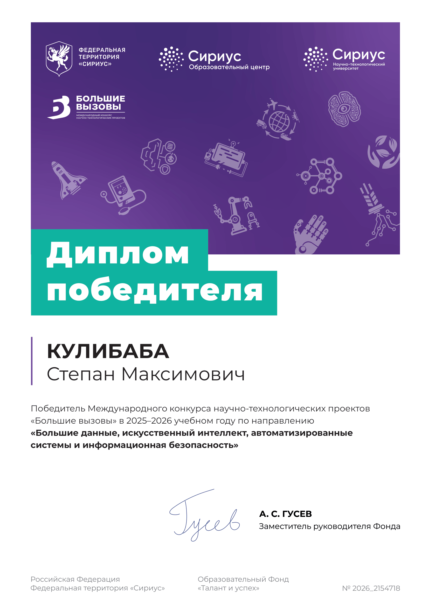
National Prize Winner in Artificial Intelligence, All-Russian Olympiad in Informatics
Earned national prize-winner status in the final stage of the All-Russian Olympiad in Informatics, ranking 19th overall among 245 finalists in the Artificial Intelligence track.
The final consisted of two intensive five-hour rounds. The theoretical round assessed mathematical foundations of AI (probability, statistics, linear algebra, calculus, optimization). The practical round focused on data analysis and machine learning, requiring participants to develop, train, evaluate, and improve models under strict time constraints.
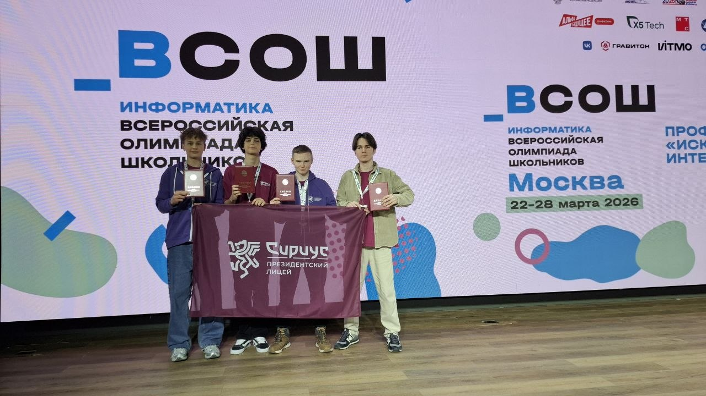
International Second-Place Winner, Young Scientists Hackathon 2025
Placed 2nd at the Young Scientists Hackathon 2025, an international product-focused competition. Within a 27-hour coding window, our team developed "Academic Profile: A Scientist's Digital Footprint," an intelligent platform for automating the collection, systematization, analysis, and visualization of scientific publication data.
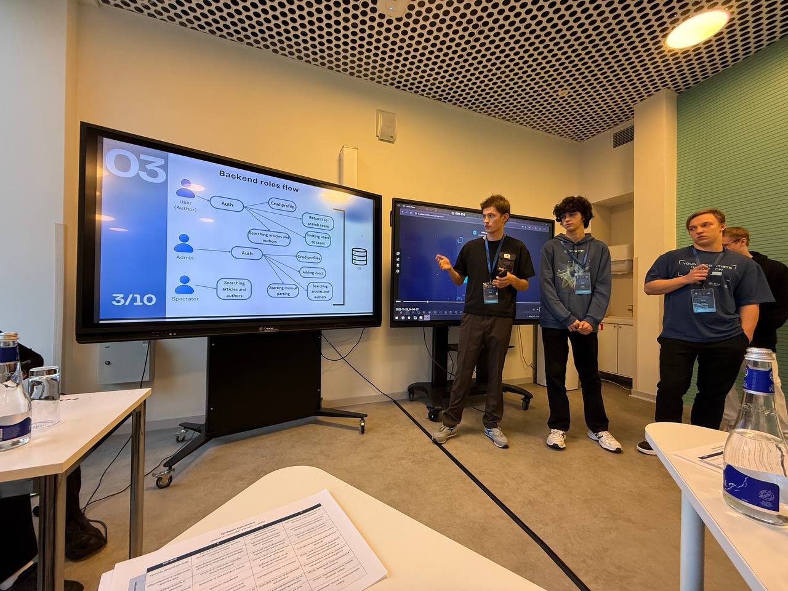
International Silver Award, Fizmat AI Olympiad 2025
Placed 2nd overall as part of a three-person team. Solved five end-to-end machine learning problems under strict time constraints, covering audio processing, recommender systems, CV, and retrieval-based QA with LLMs.

Grand Prize Winner & People's Choice Award, Big Challenges 2025
Named Grand Prize Winner. The project developed an autonomous multi-agent AutoML system designed to help researchers construct complete machine learning pipelines through tree-guided exploration and automated debugging.
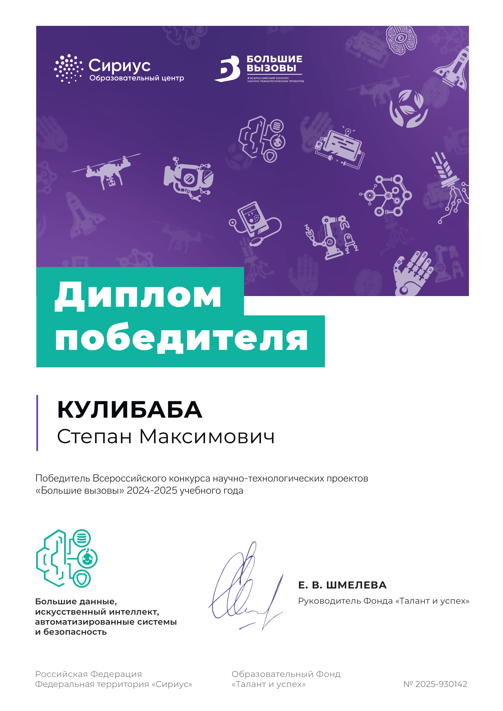
First-Place Winner, Big Challenges 2024
Won with SolveMath, an AI-assisted platform for generating detailed and interpretable solutions to mathematical problems, combining LLM reasoning with a dedicated MathTools service.
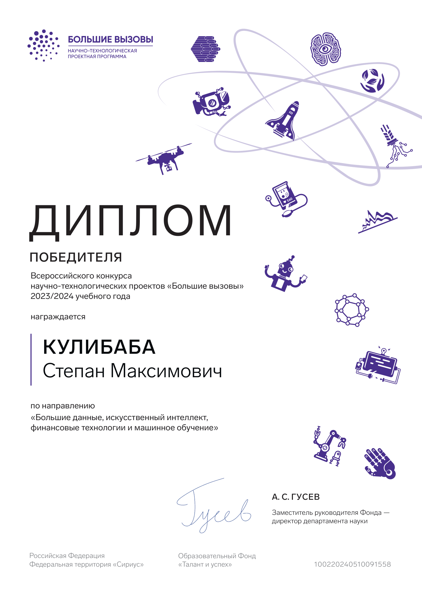
Physics Olympiads
Second-Degree Prize Winner, Moscow School Olympiad in Physics
Earned a Second-Degree Diploma in the final stage of the Moscow School Olympiad in Physics, a Level I Olympiad requiring rigorous mathematical modeling and application of fundamental principles.
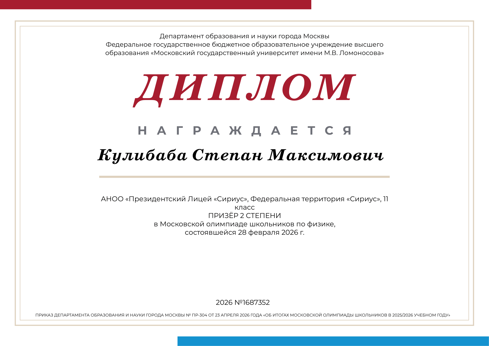
Winner, All-Siberian Open Physics Olympiad
Earned winner status in the final stage of the All-Siberian Open Physics Olympiad, recognized as a Level II competition reflecting strong national academic standing.
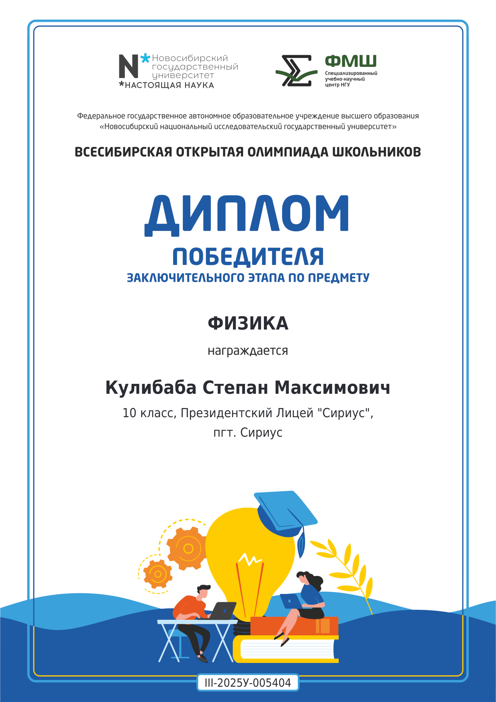
Algorithms & Data Analysis
National Winner, DANO Data Analysis Olympiad — 16th Overall
Received a First-Degree Diploma and ranked 16th overall in the national final of DANO, one of Russia's leading high-school competitions in statistics, data analysis, and applied data science.
The competition evaluates technical modeling skills, research design, hypothesis formulation, statistical validation, visualization, and practical relevance.
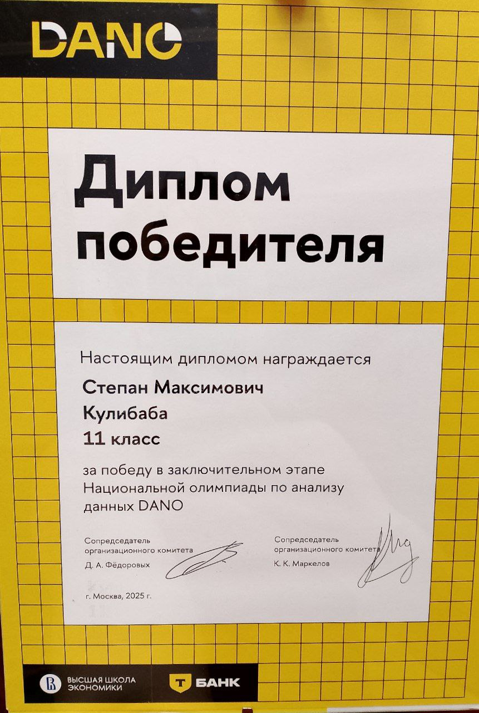
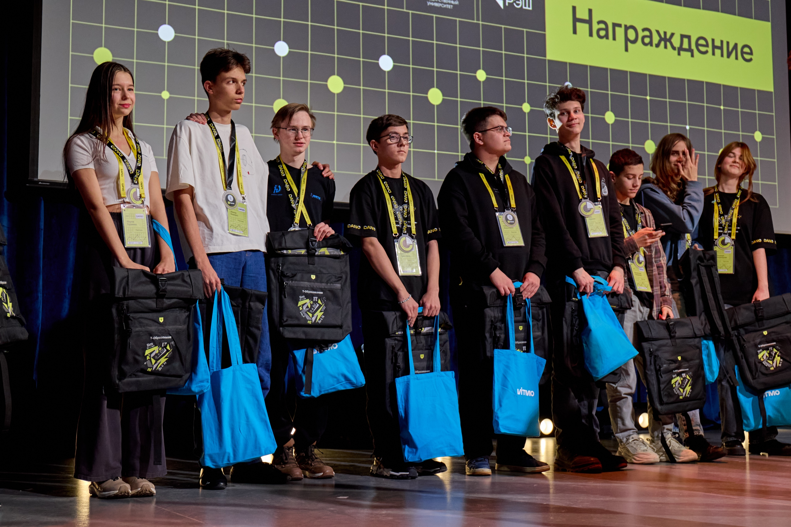
National Winner & 1st Place (Grade 10), DANO Data Analysis Olympiad
Earned a First-Degree Diploma and achieved the highest overall result among Grade 10 participants, placing 9th in the national final ranking. In the team-based project round, our team placed 1st overall.
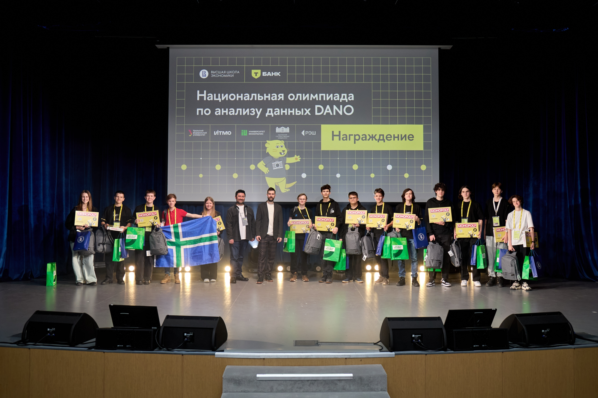
Team Prize Winner, RuCode 2024 Algorithmic Programming Championship
Earned team prize-winner status in the final of the RuCode 2024 Algorithmic Programming Championship. The competition required rapid algorithm selection, rigorous reasoning, and efficient implementation under time constraints.
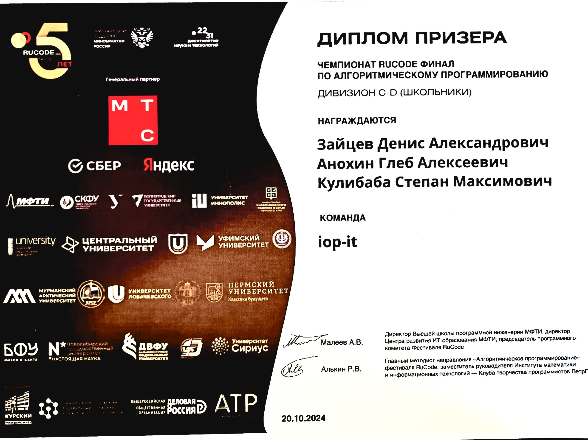
Selected Projects
Showcase of software engineering and machine learning projects.
I am currently organizing my portfolio. Detailed descriptions of my projects will be added here soon!